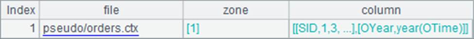
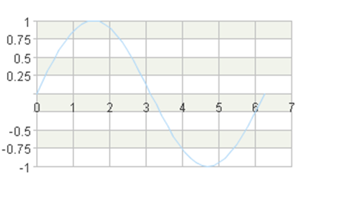

Numeric axes are required when plotting a chart showing relative sizes of numeric data. Through them the numeric statistical values are transformed to physical coordinates. The numeric axis is so widely used that it appears in almost all charts as well as is used for a function graph.
Through the numeric axes you can calculate the position of coordinate values on the canvas according to their specified value ranges. Below is a plotting algorithm for a function graph:
|
|
A |
|
1 |
=canvas() |
|
2 |
=A1.plot("BackGround") |
|
3 |
41 |
|
4 |
=A3.([round(pi(2*#-2)/(A3-1),3),round(sin(pi(2*#-2)/(A3-1)),3)]) |
|
5 |
=A1.plot("NumericAxis","name":"x","autoCalcValueRange":false, "maxValue":7.0,"scaleNum":7,"xPosition":0.45) |
|
6 |
=A1.plot("NumericAxis","name":"y","location":2,"autoCalcValueRange": false,"maxValue":1.0,"minValue":-1.0,"scaleNum":4) |
|
7 |
=A1.plot("Line","markerStyle":0,"axis1":"x","data1":A4.(~(1)),"axis2":"y", "data2":A4.(~(2))) |
|
8 |
=A1.draw@p(350,200) |
The plotting algorithm plots a line chart fitting onto a sine curve. A3 specifies the sample number during a period. A4 prepares the chart-specific data, as shown below:

A5 plots the x-axis, specifying a range of values from the default minimum 0 to the maximum 7 and placing it in the middle of the y-axis. A6 plots the y-axis, specifying the value range as -1<=y<=1. A7 plots a line chart whose logical coordinates come from A4¡¯s data. Below is the plotting result:

Thus by defining the numeric axes, you can plot the chart according to the calculated numeric values. On a numeric axis, the logical coordinate values are evenly graduated, consecutive numbers. So a numeric axis is a continuous axis.
The length of a numeric axis is determined by the logical coordinates of the specified start point and end point of the axis. The actual position of a certain pair of coordinate values can be calculated based on the value ranges of the horizontal and vertical numeric axes (they are defined by a minimum value and a maximum value). With esProc, this coordinate transformation calculation is done automatically. Users just need to define the coordinate axes appropriately in the plotting algorithm.
By default the Autocalc value range property of the numeric axis is true. In this case the value range of a numeric axis will be automatically set according to the chart element for which the axis is plotted. If the automatically generated axis cannot meet the requirement, users can specify its value range and the number of graduations as in this example.